Overview of HierGeo. (a) HierGeo-Data associates Core-Five imagery with co-located Foursquare points of interest (POIs) and generates one short, place-anchored caption per patch. (b) HierGeo-Bench evaluates retrieval for queries that name a country or city. The reference system parses the place, searches only the matching geo-indexed shard, and ranks candidates with a vision–language model. A metadata-only ranker over the same shard is reported as a shortcut baseline.
Highlights
A corpus, a benchmark, and an honest look at what it measures
1
HierGeo-Data
Sub-metre 512×512 RGB patches from Core-Five, each captioned with a scene category, visible attributes, and the patch's city and country taken from co-located Foursquare POIs.
464,553 patches
140 countries · 2,460 cities
2
HierGeo-Bench
23,470 templated queries at the country, city, and fine-grained level. Relevance comes from metadata over the full corpus, and 4,454 queries have at least one relevant patch.
Searching all 464,553 patches gives nDCG@10 of at most 0.003 for every model. Restricting search to the named country raises it to 0.12–0.27, and to the named city to 0.28–0.51.
02
Metadata alone beats every visual ranker
Inside the same shards, a lexical match between the query category and stored POI fields reaches 0.626 nDCG@10, above every vision–language model we tested. High HierGeo-Bench scores therefore do not by themselves show visual understanding.
03
Fine-tuning transfers to external benchmarks
Training SigLIP2-L on HierGeo-Data combined with SkyScript raises mean zero-shot accuracy on seven EO classification benchmarks from 58.47% to 64.26%, and RSICD/RSITMD mean recall from 31.46% to 33.17%.
04
A simple, auditable reference system
A deterministic place parser routes each query to its country or city shard, or abstains to global search. Any CLIP-style dual encoder then ranks the shard. Only CLIP gains significantly from fine-tuning on the benchmark (+0.049 nDCG@10).
Try the Place Parser
This is the parser used by the reference system, running in your browser on the real HierGeo-Data gazetteer. Type a query and see which shard it would search.
Loading gazetteer…
The parser matches the longest country name or unambiguous alias, then a city of that country that ends the place phrase. If no country is named, or the country has no patches in HierGeo-Data, it searches the whole corpus. Continents, styles, and sub-national places without a country are deliberately out of scope.
HierGeo-Data
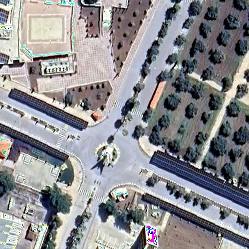
a satellite image of Park with roundabout and intersection in Irbid, Jordan.Attributes visible; category from POI.
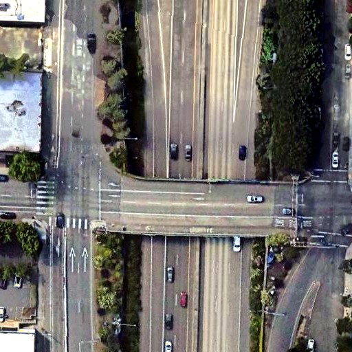
a satellite image of Commercial with multi-lane overpass in Portland, United States.Overpass visible; "commercial" is POI-derived context.
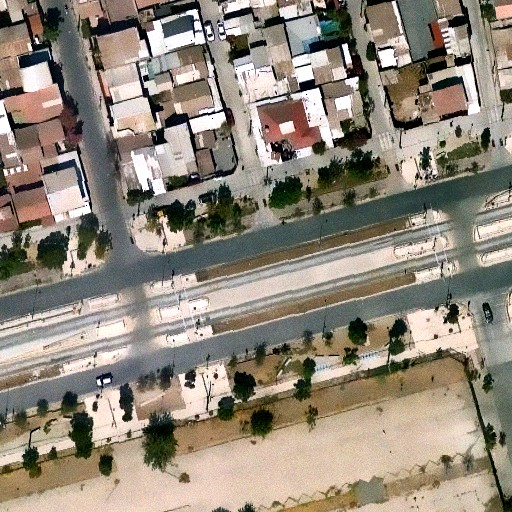
a satellite image of Urban with horizontal road and urban area in Santiago, Chile.Generic, low-information attributes.
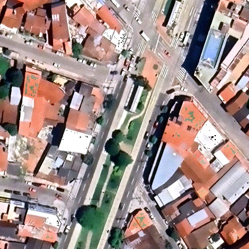
a satellite image of Commercial with commercial building in Santa Cruz de la Sierra, Bolivia.Attribute repeats the category.
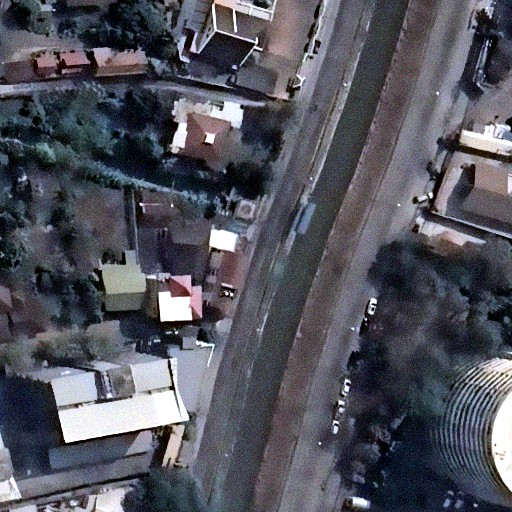
a satellite image of Water with water tower and urban area in Chiang Mai, Thailand.Weak: POI-derived category (Water); the patch is dominated by buildings.
HierGeo-Data statistics. Left: corpus-level properties. Word counts exclude the fixed "a satellite image of" prefix. Right: the ten scene categories stored with each patch. Ten countries contribute 60.5% of the patches, so coverage follows where POIs are dense.
02
Comparison with other EO image–text corpora
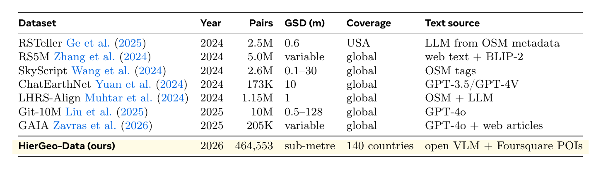
Table 2
Large EO image–text corpora. HierGeo-Data is smaller than several recent corpora. What distinguishes it is that every caption names the city and country of its patch, taken from POI metadata rather than inferred from pixels.
03
HierGeo-Bench composition
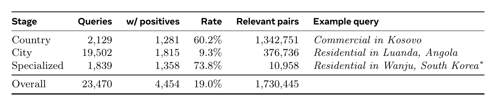
Table 3
HierGeo-Bench composition. Queries pair a scene category with a country or a city. A patch is relevant if its place matches and its stored category falls in the query's category group, so relevance is metadata-derived. The specialized stage displays the generic category while relevance follows a fine-grained label.
Main Results
01
Place-constrained retrieval on HierGeo-Bench
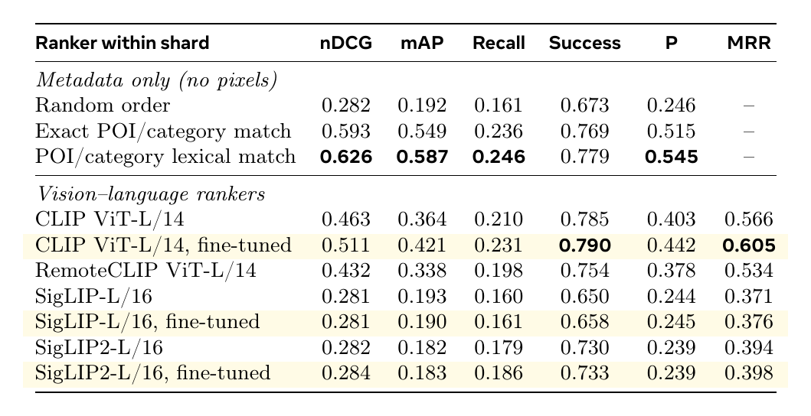
Table 6
Rankers under identical country+city routing (metrics @10, 4,454 queries with positives). Metadata rankers never see pixels, yet the lexical match (0.626 nDCG@10) beats every vision–language model, and a random order inside the shard (0.282) already matches the SigLIP family. Fine-tuned rows are highlighted.
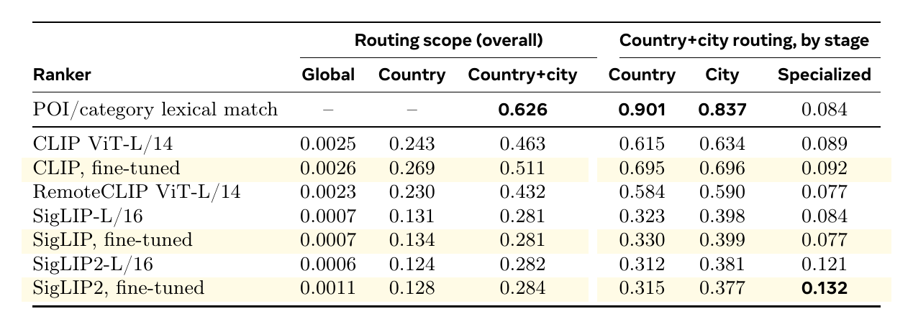
Table 7
Where the performance comes from (nDCG@10). Left: the same rankers searching the whole corpus, the queried country's shard, or the country-and-city shard. Right: country+city routing by benchmark stage.
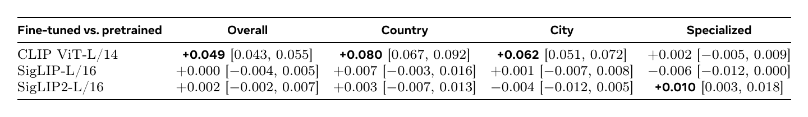
Table 11
Effect of fine-tuning on HierGeo-Bench (change in nDCG@10, 95% paired bootstrap intervals). Only CLIP improves significantly overall, although its training captions had place names removed: the gain reflects category alignment, not learned geography.
02
Zero-shot scene classification
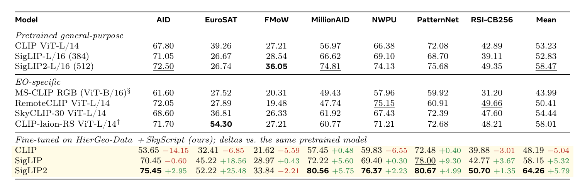
Table 4
Zero-shot scene classification (top-1 %). All rows except CLIP-laion-RS (†, reported by SkyScript) use one protocol, and all except MS-CLIP (§, evaluated with its own code) use our released code: the prompt "a satellite image of {class}", native resolution, and the full evaluation splits. Fine-tuned SigLIP2 reaches 64.26%, +5.79 points over its initialisation. All fine-tuned models were trained on HierGeo-Data combined with SkyScript.
03
Zero-shot cross-modal retrieval
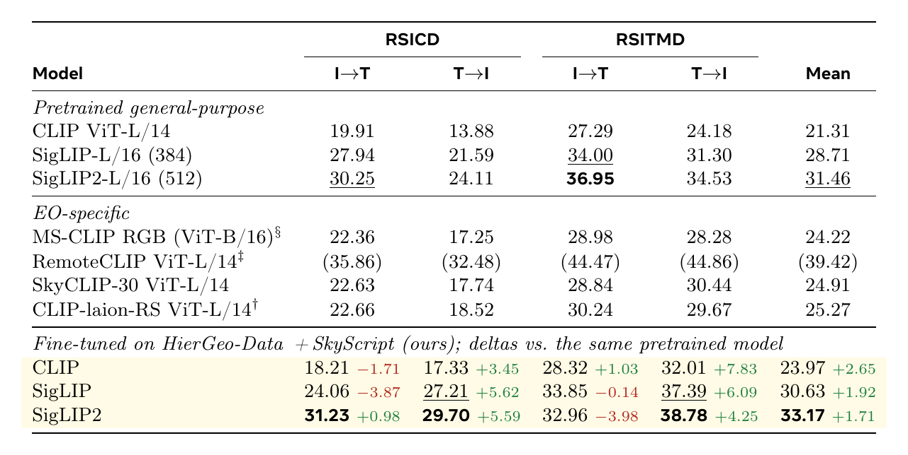
Table 5
Zero-shot retrieval on RSICD and RSITMD (mean of R@1/5/10 per direction). All three fine-tuned models improve their mean recall; text-to-image retrieval gains 3–8 points while image-to-text changes by −4.0 to +1.0 points. RemoteCLIP (‡) is trained on these datasets and is shown in parentheses.
Limitations
Attribution of gains
Every fine-tuned model saw HierGeo-Data combined with SkyScript, so external gains cannot yet be attributed to POI-conditioned captions alone. A controlled caption ablation is prepared but not complete.
Training procedure
The paper checkpoints were trained without gradient synchronisation across GPUs. The released trainer fixes this, but has not been used to retrain the paper models.
Caption quality
Only the location of each caption is guaranteed to match metadata. Categories and attributes are generated and can be generic or wrong; no human audit of caption claims has been completed.
Benchmark validity
Relevance is metadata-derived, queries are templated, and the gallery overlaps the training data. HierGeo-Bench measures place-constrained retrieval over a known collection, not independently verified visual relevance.
Citation
HierGeo
If you find HierGeo useful for your research, please consider citing our work.
BibTeX
@misc{patle2026hiergeo,
title = {HierGeo: POI-Grounded Satellite Captions and a Diagnostic Benchmark for Geographically Constrained Earth Observation Retrieval},
author = {Patle, Shubham and Zaheer, Muhammad Zaigham and Khan, Salman},
year = {2026},
archivePrefix = {arXiv},
primaryClass = {cs.CV},
note = {arXiv identifier to be added}
}